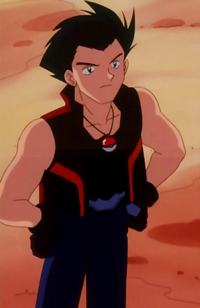
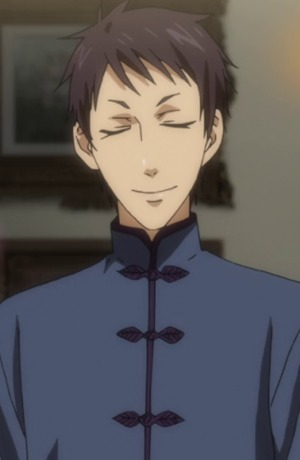

|  |
Drake |
|
Drake is the Orange Crew Supreme Gym Leader of the Orange League and he lives on Pummelo Island. He is he strongest trainer ever in the Orange League history. |
 |
Lancer of Red |
|
Lancer of Red is the Lancer-class servant of Shirou Kotomine of the Red Faction. His true name is Karna, the son of the Sun God. His personality is cold and unforgiving. His strongest weapon was his "will" and posses a strong will and heart. |
|  |
Lau |
- Black Butler
- Black Butler: His Bulter, Performer
- Black Butler 2
- Black Butler 2 Specials
- Black Butler Picture Drama
- Black Butler: Book of Circus
- Black Butler: Book of Murder
- Black Butler: Book of the Altantic
|
Lau is the branch manager of a Profitable Chinese trading company's English operations and an acquintance of both Ciel and Madam Red. He is an easygoing and carefree man who frequently smiles while smoking. His assistance/personal assassin is Ran-Mao. |
 |
Renzou Shima |
- Blue Exorcist
- Blue Exorcist: Kuro's Trip Away From Home
- Blue Exorcist Specials
- Blue Exorcist Movie
- Blue Exorcist: Kyoto Saga
- Blue Exorcist OVA
|
Renzou Shima is an Exwire at True Cross Order. His childrenhood friends are Ryuji Suguro and Konekomaru Miwa. He is the most carefree Exwires out of the others. He is also very friendly. He is a shameless pervert and obsessed with over women. |